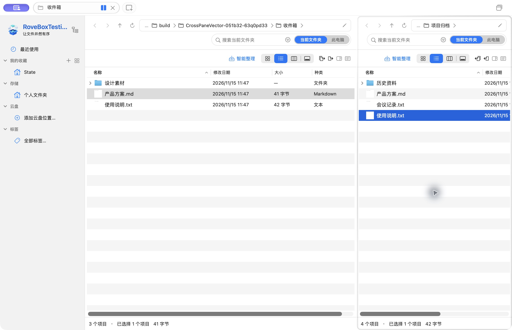
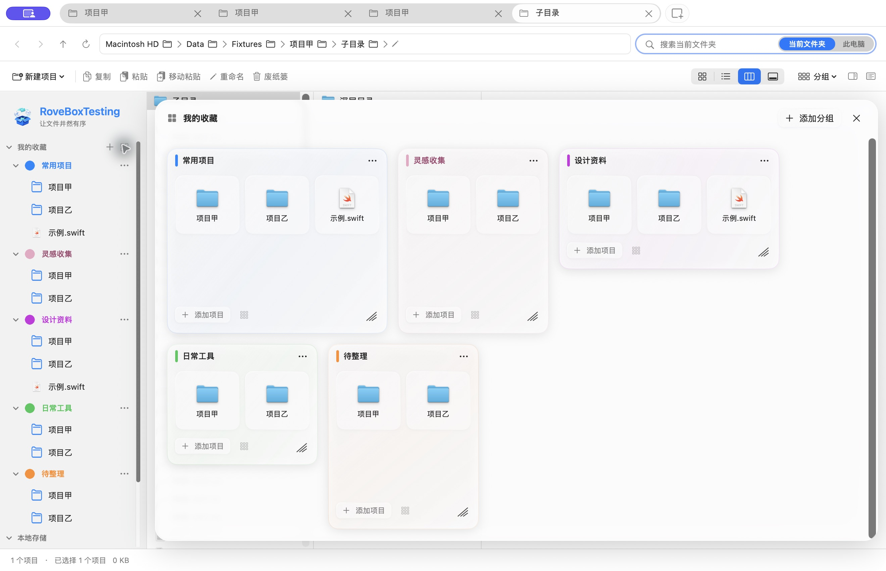
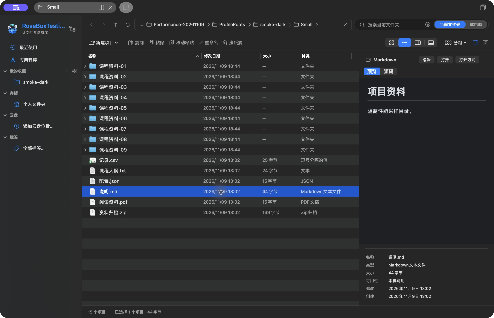

批量重命名 / Batch rename
替换、编号、添加前后缀，先预览结果，再确认修改。
Replace text, number files, or add prefixes and suffixes. Review changes before applying.
ROVEBOX · MADE FOR MAC
A calmer way to manage files.
把常用目录放在手边，在双栏之间整理文件，点一下就能阅读。
RoveBox 用熟悉的 Mac 交互，连接浏览、预览和整理。
Keep folders close, organize across two panes, and preview with a click. A native Mac file manager that brings browsing, reading, and organizing together.
macOS 14+ · Apple 芯片与 Intel / Apple silicon & Intel
了解内测 / Explore the beta
01 / BROWSE
用多页签保留不同项目，用双栏并排浏览来源与目标。列表、分栏、图标与画廊四种视图，适应不同文件；把常用页签组合保存为工作区，下次接着整理。
Keep projects in separate tabs and place source and destination side by side. Choose list, column, icon, or gallery views, and save tab layouts as workspaces.
02 / FAVORITES
把文件和文件夹固定到“我的收藏”，按项目分组，搭配颜色、图片或 Emoji 图标。侧栏与分组气泡共用同一份收藏；分组只整理快捷引用，不移动磁盘上的文件。
Group favorite files and folders by project, with colors, images, or emoji. The sidebar and grouped panel share the same favorites. Organizing shortcuts leaves the original files in place.

03 / PREVIEW
直接阅读 Markdown、代码、网页和 CSV／TSV，以及系统 Quick Look 支持的图片、PDF、音视频等文件。预览默认只读，需要时再进入文本编辑；ZIP 可以只读浏览并安全解压。
Read Markdown, code, web pages, CSV and TSV, plus images, PDFs, and media supported by macOS Quick Look. Previews start read-only; enter text editing when needed. Browse ZIP archives and extract their contents.

04 / ORGANIZE
替换、编号、添加前后缀，先预览结果，再确认修改。
Replace text, number files, or add prefixes and suffixes. Review changes before applying.
结合文件名称、类型和本机移动习惯提出建议，由你核对并决定。
Review suggestions based on names, file types, and local move history. You decide what moves.
复制与移动显示进度，支持冲突处理、暂停、继续和撤销。
Follow copy and move progress, resolve conflicts, pause, resume, and undo.
被动浏览不自动下载云文件，首次启动不自动改变系统文件关联。支持简体中文与英文。
Passive browsing does not download cloud files or change default file associations on first launch. Available in English and Simplified Chinese.
EARLY ACCESS
RoveBox 正在内测，尚未在 Mac App Store 公开上架。欢迎联系获取 Mac 内测版，或告诉我们你的使用建议。
RoveBox is in beta and is not yet publicly available on the Mac App Store. Contact us for the Mac beta or share your feedback.
联系获取内测 / Request the beta当前单独提供的 Mac 内测版没有 21 天试用或购买限制。首次打开如遇系统拦截，请按随包指引在“隐私与安全性”中允许打开。
The separately provided Mac beta has no 21-day trial or purchase requirement. If macOS blocks the first launch, follow the included guide in Privacy & Security.